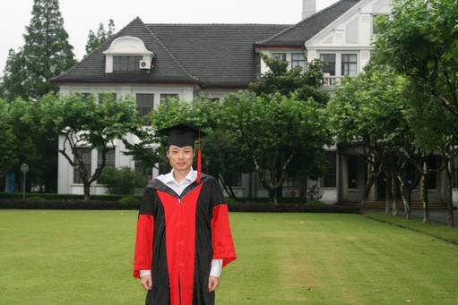
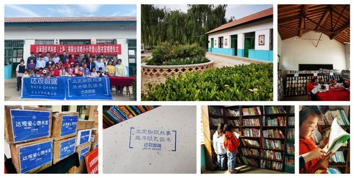
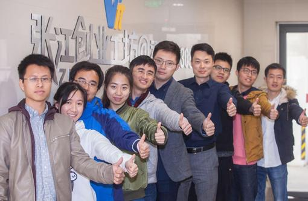

一、陈运文与达观数据
陈运文，达而观信息科技（上海）有限公司（简称“达观数据”）创始人兼董事长。复旦大学计算机博士，国家人才计划专家，曾荣获共青团中央“中国青年创业奖-科技创新特别奖”、上海市“科学技术奖·青年科技杰出贡献奖”、“青年五四奖章”、“五一劳动奖章”等荣誉，上海市人工智能首批正高级职称专家，国际计算机学会（ACM）和电子电器工程师学会（IEEE）会员，中国计算机学会（CCF）高级会员。曾担任盛大文学首席数据官，腾讯文学高级总监、数据中心负责人，百度核心技术研发工程师等职务，多次摘取ACM CIKM、KDD CUP、EMI Hackathon等国际计算机竞赛桂冠，申请有100余项国家发明专利，并出版有《智能Web算法》、《智能RPA实战》等著作。
在复旦大学读书期间，陈运文博士的毕业论文获得上海市优秀博士论文奖。2015年担任复旦大学计算机学院校友会理事，2018年担任复旦大学工程硕士（计算机技术）专业学位校外研究生导师。2021年，他回到母校——复旦大学计算机科学技术学院捐资设立“达观数据奖学金”，表达其对教育事业和计算机人才培养的关爱和支持，以及对复旦大学优秀学生成长成才的殷切期盼。

达观数据创新性地运用自然语言处理、知识图谱、搜索推荐、RPA等技术赋能世界五百强企业、知名金融机构、政府和大型企业等众多客户，助力多行业数字化升级。在他的带领下，达观数据获得了“创青春”中国青年互联网创业大赛全国冠军，中国人工智能领域最高奖“吴文俊人工智能奖”，国家级专精特新“小巨人”企业等多项国家级殊荣，并承担多项国家及省部级人工智能重大专项，入选福布斯科技创新50强，国际权威咨询集团 IDC和Forrester创新者，毕马威和德勤分别授予的科技创新明日之星奖。
陈运文博士带领达观人不忘初心，追求社会责任与企业价值并行，用实际行动诠释企业的担当。通过联合复旦校友会、以及各类爱心单位开展“贫困小学爱心图书室捐建”活动，近四年来已经分别为河南省郏县、云南省云龙县、甘肃省秦安县、广西壮族自治区洞靖镇等累计捐赠近十间爱心图书室，和若干文体用品。并且助力新疆克州乌恰县“筑梦奖学金”专项助学活动进行现场捐款，旨在引导青少年学子们心怀梦想、脚踏实地、努力奋斗。

陈运文2021年获得共青团中央颁发的中国青年创业奖（上海唯一获奖者）荣誉称号。作为母校，向他表示祝贺的同时，也希望陈总能给母校师生做些深度交流，由此我们策划了本次访谈，希冀给复旦学子们更多的启迪和帮助。
二、访谈时刻
1.您读书以及创业时候为什么选择自然语言处理、文本数据挖掘作为您的研究方向？
陈运文：当初在复旦读书的时候，人工智能的概念还并不像今天这么热门，当时我们学习和研究的更多叫机器学习（Machine Learning）和模式识别（Pattern Recognition），读书的时候觉得这些技术确实挺有意思的，也非常有实用意义。毕业后我去了工业界，在百度负责搜索引擎算法研发的工作，大家使用到自然语言处理和数据挖掘的技术，也实践了各类机器学习算法。后来在盛大研究院和盛大文学负责大数据中心的工作，同样每天的主要精力也在处理海量的文字资料，包括之后在腾讯文学以及阅文集团也是负责自然语言处理的团队工作。再加上自己也很看好自然语言处理技术的产业应用前景，就选择了这个创业方向。
2.您毕业以后，在几家大厂中工作，是什么让您放弃了更加稳定的工作而选择了创业之路？
陈运文：首先是时代机遇，我们创业启动在2015年，那时候创新创业的氛围非常热，风险投资也非常的活跃，有创业想法和一技之长的人能相对容易的拿到投资。业界知名的投资机构真格基金当时就给了我们第一笔1000万元的天使投资，让我们一开始就有充裕的资金研发产品。
内因就是我们有一个团结和有战斗力的团队，并积累了丰富的技术经验。另外在实体产业里，自然语言处理的应用有着广阔的空间，我们找到了这个巨大的、有潜力的市场。
3.您在创业的过程中遇到过哪些困难，又是如何努力克服的呢？
陈运文：首当其冲的困难是怎么样能吸引优秀的人才。我觉得这是所有创业公司都会经历的挑战。相比之前在大厂工作时有很大的人才挑选余地，而我们一个初创企业在早期是很难吸引到优秀学子的。但人才对我们这样轻资产的科技公司来说又是最宝贵的，所以就需要想各种办法、克服各种障碍、三顾茅庐去打动有潜力的人才。
4.您觉得从一个技术人才转换到管理者需要做出哪些改变，有什么好方法可以分享吗？
陈运文：我是觉得不管是计算机技术本身，还是销售、市场、组织管理等，每个方向都有自己的运作的潜在规律。从技术向管理者变化的时候，关键是心态，需要放下身段虚心学习，首先认知到自己的不足，然后虚心地向这个行业里的专家学习，多听多想，让自己能迅速成长。
中国有句古话叫“技多不压身”，保持好的学习心态，并在实践过程中反思理论，做到知行合一。比如创业公司里不仅工程技术能力很重要，但是融资能力、市场营销能力也同样重要。这些能力在学校里也可以有意识地积累，毕业后遇到在这方面有专长的同事也可以抓住机会去请教学习。
5.您现在关注的科研技术方面的问题有哪些，希望在哪些方面可以做突破？
陈运文：最近几年科研理论界的发展非常快，每年的顶会上都有很多创新的成果发表，包括Prompt、BERT、Transformer等模型。而在工程实践时，我们发现训练样本的数量和标注质量都是严重不足的，不像学术界有非常干净整洁的语料和很理想的应用场景。所以需要研究在存在很多噪音和小样本训练集的情况下，怎样保持好的识别结果，或者训练正负样本严重不平衡时，系统仍然有一个很强的鲁棒性。
此外算法性能和算力成本也是工程实践中需要考虑的，学术界不怎么需要考虑高并发、可靠性、有限算力条件下结果生成时间等问题，但这些问题都是我们每天需要思考和解决的，因为只有把这些问题处理好以后，一个面向实战的工程系统才能顺利运转起来。

6.疫情期间，企业有面临什么样的挑战或者机遇吗？（了解到您带领公司紧急开发了防疫问卷机器人、材料预审机器人、数据填报机器人、数据查询机器人，可以分享一下您当时的心路历程吗？）
陈运文：疫情影响了我们很多人的生活和工作方式，例如疫情时很多人无法正常到岗上班，一些文档收发、材料审核、信息填报等日常工作很难像之前那样方便了。这些原本严重依赖于人工的工作，是可以用AI技术自动化去完成的，所以我们开发了一些文档在线自动化填报、审核、分析等机器人系统，挺有实战价值的。疫情也让更多人意识到了AI自动化技术起到了雪中送炭的作用。
7.在复旦大学的求学经历对您各方面产生了哪些影响呢？有遇到过让您受益匪浅的人或事吗？
陈运文：给我们授课的教授们都特别勤恳努力，不仅学识渊博，而且非常谦虚谨慎。不管是他们做学问的态度，还是他们在科研方面给我们的指导，都让我们记忆犹深的。
当时我们还在校本部的袁成英计算机，在5楼的走廊上有一个乒乓球桌，经常下午5点多钟的时候很多老师们就会出来打球放松，施伯乐教授的球技很好，和我们打球的时候也乐呵呵的，让我印象很深。
当时我们计算机的硬件条件还不够好，经常跑一个算法实验就得等很久，调参数改模型加上一次次的等结果，很快一个晚上通宵就过去了。去年回母校参观了学院的机房，性能非常强大，一排排的服务器集群，咱们学弟学妹们现在做实验的硬件条件非常优越了，由衷的高兴。
8.您认为在计算机科研领域的学生应该具备怎样的基本素质，哪些能力是需要重点培养呢？
陈运文：中国有句古话叫“纸上得来终觉浅，绝知此事要躬行”，动手实践非常重要，尤其计算机这样一门应用性很强的学科。哪怕只是一个最简单的二分查找的代码，是否亲手写过还是相差很大的。理论和实践相结合，两者都非常重要。
除此之外，我觉得作为一个理工科的学生，人文方面的知识和素养也是可以有意识去补充的，尤其咱们复旦大学是一个文理兼容的综合性大学，有很多学习的好机会。如果有机会可以去听一听文史哲等其他专业的讲座，这些机会毕业以后就很难得了。工作后对每个人的能力素质要求是全方位的，如果同学们能有意识地完善各方面的能力，提高修养，未来肯定是会有收获的。
9.您对即将可能会选择工作或者创业的同学们有什么建议吗？
陈运文：人生条条大路通罗马，每条道路都有精彩。在学校里通过一些实践工作，能更好地认识自己很重要。每个同学的性格习惯都不同，选择自己最擅长和内心最认可的方向我认为最重要。
如果选择创业的话要做好持久战的准备，这个过程是非常漫长和崎岖的，所谓“进窄门、走远路、见微光”，要选择一个自己认定的方向，不随大流；要目光长远，始终保持热情和信念，来克服各种困难。同学们可以在学校里参加一些像“挑战杯”这样的科创活动，体验一下从零到一的创业过程，积累经验。
10.您在复旦大学创立了“达观数据奖学金”，您一直关心着母校的发展，您对同学们有哪些寄语吗？
陈运文：非常感恩母校给了我知识和培养，尽我所能为母校做一些绵薄的贡献。学弟学妹们比我们更优秀，去年起我们设立了“达观数据奖学金”，期望能鼓励更多的学子们学业有成，前程似锦。
在校园里的时光是人生中最美好最宝贵的，学弟学妹们珍惜这段时间，抓紧时间充实自己，多学一些本领，多体验丰富的生活，努力成就自己，未来回报母校的培养。